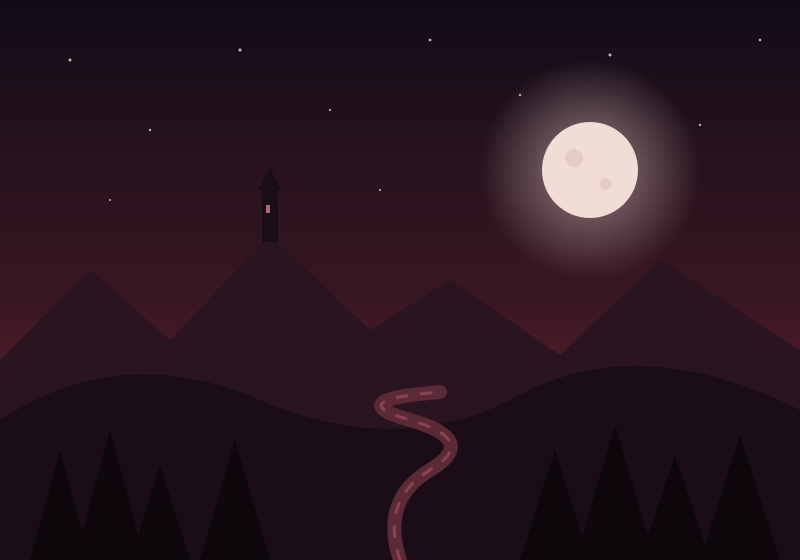

A fantasy setting shaped by monsters, otherworlders, and a society with its own rules.

Rathna
The fantasy world Han-Bin is sent to. It runs on a level and adventurer system, and
the average local adventurer is only around level 20. The name is spelled
in different ways depending on the translation (Rathna, Rath'nia, Latna).
Selha Latna
A training area for otherworlders, where they prepare before moving on to Rathna.
This is the "tutorial" where Han-Bin gets stuck for more than 20 years after his
guide system breaks.
Earth
Han-Bin's home world. He is a Korean army veteran, and getting back home is one of
his goals.
Things that shape the world
The Guideline. A system given to the people sent from Earth. It shows their level
and lets them use skills.
Otherworlders. People brought from Earth are treated with suspicion, and in some
parts of the story they are hunted. Han-Bin has to be careful about revealing who he really is.
Dragon hunters. Some noble families, such as the Bennisters, are known as dragon
hunters.
Ormphlaus' plan. The demon god wants to take over Rathna, which puts the
otherworlders in the middle of a bigger conflict.
Town and kingdom names are left out on purpose, to avoid spoilers and mistakes. The official
series page is the best place to check them.